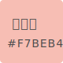
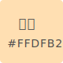
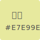
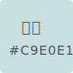
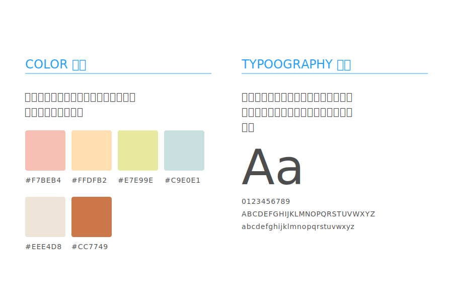

可愛、友善、溫和
透過插畫，可以將文字的內容、故事或思想以視覺化的方式呈現，在網頁運用上，插畫是一個很棒的媒介，讓使用者感覺到溫度與友善，更加產生彼此的交流。讓我們一起探索插畫在網頁上的應用吧：
1. 少一點文字，多一點插畫
針對不同族群，尤其是孩子們，文字太多的情形下容易產生疲倦感，而插畫不僅吸引了眼光，也能讓網頁具備敘述性的內容，如同翻閱一本童話故事書。
2. 活潑的線條
背景常使用線條連接不同區塊的元素，同時在按鈕也會使用不一樣的效果。
1. 使用者視覺體驗
讓使用者觀看時可以很放鬆且充滿童趣。
2. 適合族群及產業
(○)教育業：適合呈現幼童的學習內容，幼稚園或兒童學習網站，都能更貼近孩童的內心。
3.建議色彩
   整體配色：豐富的色彩可以提供多采多姿的網頁。
粉紅色：溫暖、友愛。
橘色：陽光、趣味。
綠色：健康、自然，讓人聯想到植物。
藍色：平靜、安穩，讓人聯想到海洋或天空。
在範例中，我們統一使用【網路中文】的網站內容，進行各種風格的展示，讓使用者更能清楚不同風格的特性，而不會被產業套版模式給侷限，以下為我們的插畫風格展示說明：


相信您已經了解插畫帶來的魅力，若您需要網站設計，可以與我們聯繫，讓我們團隊為您提供客製化的方案。